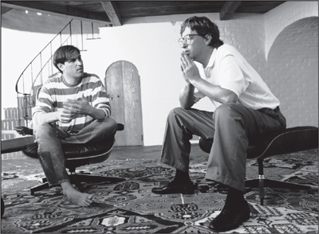

GATES AND JOBS
When Orbits Intersect

Jobs and Gates, 1991
In astronomy, a binary system occurs when the orbits of two stars are linked because of their gravitational interaction. There have been analogous situations in history, when an era is shaped by the relationship and rivalry of two orbiting superstars: Albert Einstein and Niels Bohr in twentieth-century physics, for example, or Thomas Jefferson and Alexander Hamilton in early American governance. For the first thirty years of the personal computer age, beginning in the late 1970s, the defining binary star system was composed of two high-energy college dropouts both born in 1955.
Bill Gates and Steve Jobs, despite their similar ambitions at the confluence of technology and business, had very different personalities and backgrounds. Gates's father was a prominent Seattle lawyer, his mother a civic leader on a variety of prestigious boards. He became a tech geek at the area's finest private school, Lakeside High, but he was never a rebel, hippie, spiritual seeker, or member of the counterculture. Instead of a Blue Box to rip off the phone company, Gates created for his school a program for scheduling classes, which helped him get into ones with the right girls, and a car-counting program for local traffic engineers. He went to Harvard, and when he decided to drop out it was not to find enlightenment with an Indian guru but to start a computer software company.
Gates was good at computer coding, unlike Jobs, and his mind was more practical, disciplined, and abundant in analytic processing power. Jobs was more intuitive and romantic and had a greater instinct for making technology usable, design delightful, and interfaces friendly. He had a passion for perfection, which made him fiercely demanding, and he managed by charisma and scattershot intensity. Gates was more methodical; he held tightly scheduled product review meetings where he would cut to the heart of issues with lapidary skill. Both could be rude, but with Gates—who early in his career seemed to have a typical geek's flirtation with the fringes of the Asperger's scale—the cutting behavior tended to be less personal, based more on intellectual incisiveness than emotional callousness. Jobs would stare at people with a burning, wounding intensity; Gates sometimes had trouble making eye contact, but he was fundamentally humane.
"Each one thought he was smarter than the other one, but Steve generally treated Bill as someone who was slightly inferior, especially in matters of taste and style," said Andy Hertzfeld. "Bill looked down on Steve because he couldn't actually program." From the beginning of their relationship, Gates was fascinated by Jobs and slightly envious of his mesmerizing effect on people. But he also found him "fundamentally odd" and "weirdly flawed as a human being," and he was put off by Jobs's rudeness and his tendency to be "either in the mode of saying you were shit or trying to seduce you." For his part, Jobs found Gates unnervingly narrow. "He'd be a broader guy if he had dropped acid once or gone off to an ashram when he was younger," Jobs once declared.
Their differences in personality and character would lead them to opposite sides of what would become the fundamental divide in the digital age. Jobs was a perfectionist who craved control and indulged in the uncompromising temperament of an artist; he and Apple became the exemplars of a digital strategy that tightly integrated hardware, software, and content into a seamless package. Gates was a smart, calculating, and pragmatic analyst of business and technology; he was open to licensing Microsoft's operating system and software to a variety of manufacturers.
After thirty years Gates would develop a grudging respect for Jobs. "He really never knew much about technology, but he had an amazing instinct for what works," he said. But Jobs never reciprocated by fully appreciating Gates's real strengths. "Bill is basically unimaginative and has never invented anything, which is why I think he's more comfortable now in philanthropy than technology," Jobs said, unfairly. "He just shamelessly ripped off other people's ideas."
When the Macintosh was first being developed, Jobs went up to visit Gates at his office near Seattle. Microsoft had written some applications for the Apple II, including a spreadsheet program called Multiplan, and Jobs wanted to excite Gates and Co. about doing even more for the forthcoming Macintosh. Sitting in Gates's conference room, Jobs spun an enticing vision of a computer for the masses, with a friendly interface, which would be churned out by the millions in an automated California factory. His description of the dream factory sucking in the California silicon components and turning out finished Macintoshes caused the Microsoft team to code-name the project "Sand." They even reverse-engineered it into an acronym, for "Steve's amazing new device."
Gates had launched Microsoft by writing a version of BASIC, a programming language, for the Altair. Jobs wanted Microsoft to write a version of BASIC for the Macintosh, because Wozniak—despite much prodding by Jobs—had never enhanced his version of the Apple II's BASIC to handle floating-point numbers. In addition, Jobs wanted Microsoft to write application software—such as word processing and spreadsheet programs—for the Macintosh. At the time, Jobs was a king and Gates still a courtier: In 1982 Apple's annual sales were $1 billion, while Microsoft's were a mere $32 million. Gates signed on to do graphical versions of a new spreadsheet called Excel, a word-processing program called Word, and BASIC.
Gates frequently went to Cupertino for demonstrations of the Macintosh operating system, and he was not very impressed. "I remember the first time we went down, Steve had this app where it was just things bouncing around on the screen," he said. "That was the only app that ran." Gates was also put off by Jobs's attitude. "It was kind of a weird seduction visit, where Steve was saying, ‘We don't really need you and we're doing this great thing, and it's under the cover.' He's in his Steve Jobs sales mode, but kind of the sales mode that also says, ‘I don't need you, but I might let you be involved.'"
The Macintosh pirates found Gates hard to take. "You could tell that Bill Gates was not a very good listener. He couldn't bear to have anyone explain how something worked to him—he had to leap ahead instead and guess about how he thought it would work," Hertzfeld recalled. They showed him how the Macintosh's cursor moved smoothly across the screen without flickering. "What kind of hardware do you use to draw the cursor?" Gates asked. Hertzfeld, who took great pride that they could achieve their functionality solely using software, replied, "We don't have any special hardware for it!" Gates insisted that it was necessary to have special hardware to move the cursor that way. "So what do you say to somebody like that?" Bruce Horn, one of the Macintosh engineers, later said. "It made it clear to me that Gates was not the kind of person that would understand or appreciate the elegance of a Macintosh."
Despite their mutual wariness, both teams were excited by the prospect that Microsoft would create graphical software for the Macintosh that would take personal computing into a new realm, and they went to dinner at a fancy restaurant to celebrate. Microsoft soon dedicated a large team to the task. "We had more people working on the Mac than he did," Gates said. "He had about fourteen or fifteen people. We had like twenty people. We really bet our life on it." And even though Jobs thought that they didn't exhibit much taste, the Microsoft programmers were persistent. "They came out with applications that were terrible," Jobs recalled, "but they kept at it and they made them better." Eventually Jobs became so enamored of Excel that he made a secret bargain with Gates: If Microsoft would make Excel exclusively for the Macintosh for two years, and not make a version for IBM PCs, then Jobs would shut down his team working on a version of BASIC for the Macintosh and instead indefinitely license Microsoft's BASIC. Gates smartly took the deal, which infuriated the Apple team whose project got canceled and gave Microsoft a lever in future negotiations.
For the time being, Gates and Jobs forged a bond. That summer they went to a conference hosted by the industry analyst Ben Rosen at a Playboy Club retreat in Lake Geneva, Wisconsin, where nobody knew about the graphical interfaces that Apple was developing. "Everybody was acting like the IBM PC was everything, which was nice, but Steve and I were kind of smiling that, hey, we've got something," Gates recalled. "And he's kind of leaking, but nobody actually caught on." Gates became a regular at Apple retreats. "I went to every luau," said Gates. "I was part of the crew."
Gates enjoyed his frequent visits to Cupertino, where he got to watch Jobs interact erratically with his employees and display his obsessions. "Steve was in his ultimate pied piper mode, proclaiming how the Mac will change the world and overworking people like mad, with incredible tensions and complex personal relationships." Sometimes Jobs would begin on a high, then lapse into sharing his fears with Gates. "We'd go down Friday night, have dinner, and Steve would just be promoting that everything is great. Then the second day, without fail, he'd be kind of, ‘Oh shit, is this thing going to sell, oh God, I have to raise the price, I'm sorry I did that to you, and my team is a bunch of idiots.'"
Gates saw Jobs's reality distortion field at play when the Xerox Star was launched. At a joint team dinner one Friday night, Jobs asked Gates how many Stars had been sold thus far. Gates said six hundred. The next day, in front of Gates and the whole team, Jobs said that three hundred Stars had been sold, forgetting that Gates had just told everyone it was actually six hundred. "So his whole team starts looking at me like, ‘Are you going to tell him that he's full of shit?'" Gates recalled. "And in that case I didn't take the bait." On another occasion Jobs and his team were visiting Microsoft and having dinner at the Seattle Tennis Club. Jobs launched into a sermon about how the Macintosh and its software would be so easy to use that there would be no manuals. "It was like anybody who ever thought that there would be a manual for any Mac application was the greatest idiot," said Gates. "And we were like, ‘Does he really mean it? Should we not tell him that we have people who are actually working on manuals?'"
After a while the relationship became bumpier. The original plan was to have some of the Microsoft applications—such as Excel, Chart, and File—carry the Apple logo and come bundled with the purchase of a Macintosh. "We were going to get $10 per app, per machine," said Gates. But this arrangement upset competing software makers. In addition, it seemed that some of Microsoft's programs might be late. So Jobs invoked a provision in his deal with Microsoft and decided not to bundle its software; Microsoft would have to scramble to distribute its software as products sold directly to consumers.
Gates went along without much complaint. He was already getting used to the fact that, as he put it, Jobs could "play fast and loose," and he suspected that the unbundling would actually help Microsoft. "We could make more money selling our software separately," Gates said. "It works better that way if you're willing to think you're going to have reasonable market share." Microsoft ended up making its software for various other platforms, and it began to give priority to the IBM PC version of Microsoft Word rather than the Macintosh version. In the end, Jobs's decision to back out of the bundling deal hurt Apple more than it did Microsoft.
When Excel for the Macintosh was released, Jobs and Gates unveiled it together at a press dinner at New York's Tavern on the Green. Asked if Microsoft would make a version of it for IBM PCs, Gates did not reveal the bargain he had made with Jobs but merely answered that "in time" that might happen. Jobs took the microphone. "I'm sure ‘in time' we'll all be dead," he joked.
At that time, Microsoft was producing an operating system, known as DOS, which it licensed to IBM and compatible computers. It was based on an old-fashioned command line interface that confronted users with surly little prompts such as C:\>. As Jobs and his team began to work closely with Microsoft, they grew worried that it would copy Macintosh's graphical user interface. Andy Hertzfeld noticed that his contact at Microsoft was asking detailed questions about how the Macintosh operating system worked. "I told Steve that I suspected that Microsoft was going to clone the Mac," he recalled.
They were right to worry. Gates believed that graphical interfaces were the future, and that Microsoft had just as much right as Apple did to copy what had been developed at Xerox PARC. As he freely admitted later, "We sort of say, ‘Hey, we believe in graphics interfaces, we saw the Xerox Alto too.'"
In their original deal, Jobs had convinced Gates to agree that Microsoft would not create graphical software for anyone other than Apple until a year after the Macintosh shipped in January 1983. Unfortunately for Apple, it did not provide for the possibility that the Macintosh launch would be delayed for a year. So Gates was within his rights when, in November 1983, he revealed that Microsoft planned to develop a new operating system for IBM PCs featuring a graphical interface with windows, icons, and a mouse for point-and-click navigation. It would be called Windows. Gates hosted a Jobs-like product announcement, the most lavish thus far in Microsoft's history, at the Helmsley Palace Hotel in New York.
Jobs was furious. He knew there was little he could do about it—Microsoft's deal with Apple not to do competing graphical software was running out—but he lashed out nonetheless. "Get Gates down here immediately," he ordered Mike Boich, who was Apple's evangelist to other software companies. Gates arrived, alone and willing to discuss things with Jobs. "He called me down to get pissed off at me," Gates recalled. "I went down to Cupertino, like a command performance. I told him, ‘We're doing Windows.' I said to him, ‘We're betting our company on graphical interfaces.'"
They met in Jobs's conference room, where Gates found himself surrounded by ten Apple employees who were eager to watch their boss assail him. Jobs didn't disappoint his troops. "You're ripping us off!" he shouted. "I trusted you, and now you're stealing from us!" Hertzfeld recalled that Gates just sat there coolly, looking Steve in the eye, before hurling back, in his squeaky voice, what became a classic zinger. "Well, Steve, I think there's more than one way of looking at it. I think it's more like we both had this rich neighbor named Xerox and I broke into his house to steal the TV set and found out that you had already stolen it."
Gates's two-day visit provoked the full range of Jobs's emotional responses and manipulation techniques. It also made clear that the Apple-Microsoft symbiosis had become a scorpion dance, with both sides circling warily, knowing that a sting by either could cause problems for both. After the confrontation in the conference room, Gates quietly gave Jobs a private demo of what was being planned for Windows. "Steve didn't know what to say," Gates recalled. "He could either say, ‘Oh, this is a violation of something,' but he didn't. He chose to say, ‘Oh, it's actually really a piece of shit.'" Gates was thrilled, because it gave him a chance to calm Jobs down for a moment. "I said, ‘Yes, it's a nice little piece of shit.'" So Jobs went through a gamut of other emotions. "During the course of this meeting, he's just ruder than shit," Gates said. "And then there's a part where he's almost crying, like, ‘Oh, just give me a chance to get this thing off.'" Gates responded by becoming very calm. "I'm good at when people are emotional, I'm kind of less emotional."
As he often did when he wanted to have a serious conversation, Jobs suggested they go on a long walk. They trekked the streets of Cupertino, back and forth to De Anza college, stopping at a diner and then walking some more. "We had to take a walk, which is not one of my management techniques," Gates said. "That was when he began saying things like, ‘Okay, okay, but don't make it too much like what we're doing.'"
As it turned out, Microsoft wasn't able to get Windows 1.0 ready for shipping until the fall of 1985. Even then, it was a shoddy product. It lacked the elegance of the Macintosh interface, and it had tiled windows rather than the magical clipping of overlapping windows that Bill Atkinson had devised. Reviewers ridiculed it and consumers spurned it. Nevertheless, as is often the case with Microsoft products, persistence eventually made Windows better and then dominant.
Jobs never got over his anger. "They just ripped us off completely, because Gates has no shame," Jobs told me almost thirty years later. Upon hearing this, Gates responded, "If he believes that, he really has entered into one of his own reality distortion fields." In a legal sense, Gates was right, as courts over the years have subsequently ruled. And on a practical level, he had a strong case as well. Even though Apple made a deal for the right to use what it saw at Xerox PARC, it was inevitable that other companies would develop similar graphical interfaces. As Apple found out, the "look and feel" of a computer interface design is a hard thing to protect.
And yet Jobs's dismay was understandable. Apple had been more innovative, imaginative, elegant in execution, and brilliant in design. But even though Microsoft created a crudely copied series of products, it would end up winning the war of operating systems. This exposed an aesthetic flaw in how the universe worked: The best and most innovative products don't always win. A decade later, this truism caused Jobs to let loose a rant that was somewhat arrogant and over-the-top, but also had a whiff of truth to it. "The only problem with Microsoft is they just have no taste, they have absolutely no taste," he said. "I don't mean that in a small way. I mean that in a big way, in the sense that they don't think of original ideas and they don't bring much culture into their product."